Reachability¶
Basics of Reachability Analysis¶
Systems without disturbances¶
Consider a general continuous-time
(1)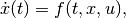
or discrete-time dynamical system
(2)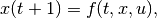
wherein  is time [1], 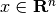 is the state,
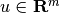 is the control, and
is time [1], 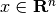 is the state,
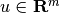 is the control, and  is a measurable
vector function taking values in 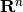. [2] The control
values 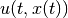 are restricted to a closed compact control set
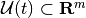. An open-loop control does not
depend on the state, 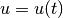; for a closed-loop control,
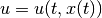.
is a measurable
vector function taking values in 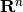. [2] The control
values 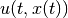 are restricted to a closed compact control set
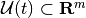. An open-loop control does not
depend on the state, 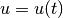; for a closed-loop control,
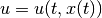.
The (forward) reach set 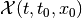 at time
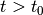 from the initial position 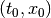 is the set of
all states 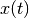 reachable at time by system (1),
or (2), with 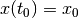 through all possible controls
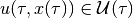,
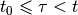. For a given set of initial states
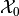, the reach set
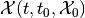 is
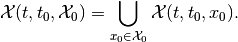
Here are two facts about forward reach sets.
is the same for open-loop and closed-loop control.
satisfies the semigroup property,
(3)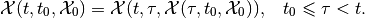
For linear systems
(4)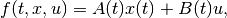
with matrices 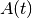 in 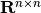 and 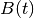 in 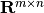. For continuous-time linear system the state transition matrix is
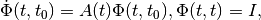
which for constant 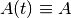 simplifies as
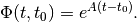
For discrete-time linear system the state transition matrix is
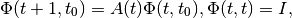
which for constant simplifies as
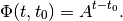
If the state transition matrix is invertible, 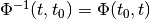. The transition matrix is always invertible for continuous-time and for sampled discrete-time systems. However, if for some 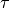, , 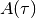 is degenerate (singular), 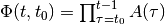, is also degenerate and cannot be inverted.
Following Cauchy’s formula, the reach set for a linear system can be expressed as
(5)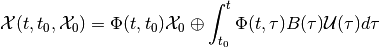
in continuous-time, and as
(6)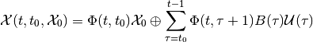
in discrete-time case.
The operation ‘’ is the geometric sum, also known as Minkowski sum. [3] The geometric sum and linear (or affine) transformations preserve compactness and convexity. Hence, if the initial set and the control sets 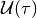, , are compact and convex, so is the reach set .
The backward reach set 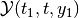 for the target position 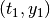 is the set of all states 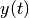 for which there exists some control , 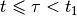, that steers system (1), or (2) to the state 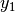 at time 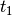. For the target set 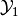 at time , the backward reach set 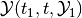 is
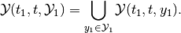
The backward reach set
is the largest weakly
invariant set with respect to the target set and
time values and . [4]
Remark. Backward reach set can be computed for continuous-time system only if the solution of (1) exists for 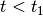; and for discrete-time system only if the right hand side of (2) is invertible [5].
These two facts about the backward reach set 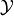 are similar to those for forward reach sets.
is the same for open-loop and closed-loop control.
satisfies the semigroup property,
(7)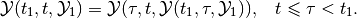
For the linear system (4) the backward reach set can be expressed as
(8)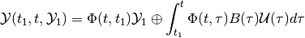
in the continuous-time case, and as
(9)
in discrete-time case. The last formula makes sense only for discrete-time linear systems with invertible state transition matrix. Degenerate discrete-time linear systems have unbounded backward reach sets and such sets cannot be computed with available software tools.
Just as in the case of forward reach set, the backward reach set of a linear system is compact and convex if the target set and the control sets , , are compact and convex.
Remark. In the computer science literature the reach set is said to be the result of operator post, and the backward reach set is the result of operator pre. In the control literature the backward reach set is also called the solvability set.
Systems with disturbances¶
Consider the continuous-time dynamical system with disturbance
(10)
or the discrete-time dynamical system with disturbance
(11)
in which we also have the disturbance input with values restricted to a closed compact set .
In the presence of disturbances the open-loop reach set (OLRS) is different from the closed-loop reach set (CLRS).
Given the initial time  , the set of initial states
, and terminal time , there are two types
of OLRS.
, the set of initial states
, and terminal time , there are two types
of OLRS.
The maxmin open-loop reach set
is the set
of all states  , such that for any disturbance
, there exist an initial state
and a control
, , that
steers system (10) or (11) from to
.
, such that for any disturbance
, there exist an initial state
and a control
, , that
steers system (10) or (11) from to
.
The minmax open-loop reach set
is the set
of all states , such that there exists a control
that for all disturbances
, ,
assigns an initial state and steers system
(10), or (11), from to .
In the maxmin case the control is chosen after knowing the disturbance over the entire time interval , whereas in the minmax case the control is chosen before any knowledge of the disturbance. Consequently, the OLRS do not satisfy the semigroup property.
The terms ‘maxmin’ and ‘minmax’ come from the fact that is the subzero level set of the value function
(12)
i.e., , and is the subzero level set of the value function
(13)
in which denotes Hausdorff semidistance. [6] Since , .
Note that maxmin and minmax OLRS imply guarantees: these are states that can be reached no matter what the disturbance is, whether it is known in advance (maxmin case) or not (minmax case). The OLRS may be empty.
Fixing time instant , , define the piecewise maxmin open-loop reach set with one correction,
(14)
and the piecewise minmax open-loop reach set with one correction,
(15)
The piecewise maxmin OLRS is the subzero level set of the value function
(16)
with given by (12), which yields
and thus,
On the other hand, the piecewise minmax OLRS is the subzero level set of the value function
(17)
with given by (13), which yields
and thus,
We can now recursively define piecewise maxmin and minmax OLRS with
 corrections for . The maxmin
piecewise OLRS with corrections is
corrections for . The maxmin
piecewise OLRS with corrections is
(18)
which is the subzero level set of the corresponding value function
(19)
The minmax piecewise OLRS with corrections is
(20)
which is the subzero level set of the corresponding value function
(21)
From (16), (17), (19) and (21) it follows that
Hence,
(22)
We call
(23)
the maxmin closed-loop reach set of system (10) or (11) at
time , and we call
(24)
the minmax closed-loop reach set of system (10) or (11) at
time .
Given initial time and the set of initial
states , the maxmin CLRS
of system
(10) or (11) at time , is the set of all states
, for each of which and for every disturbance
, there exist an initial state
and a control
, such that the trajectory
satisfying
and
in the continuous-time case, or
in the discrete-time case, with , is such
that .
Given initial time and the set of initial states , the
maxmin CLRS of system
(10) or (11), at time , is the set of all states
, for each of which there exists a control
, and for every disturbance
there exists an initial state
, such that the trajectory
satisfying
and
in the continuous-time case, or
in the discrete-time case, with , is such that . By construction, both maxmin and minmax CLRS satisfy the semigroup property (3).
For some classes of dynamical systems and some types of constraints on initial conditions, controls and disturbances, the maxmin and minmax CLRS may coincide. This is the case for continuous-time linear systems with convex compact bounds on the initial set, controls and disturbances under the condition that the initial set is large enough to ensure that is nonempty for some small .
Consider the linear system case,
(25)
where and are as in (4), and takes its values in .
The maxmin OLRS for the continuous-time linear system can be expressed through set valued integrals,
(26)
and for discrete-time linear system through set-valued sums,
(27)
Similarly, the minmax OLRS for the continuous-time linear system is
(28)
and for the discrete-time linear system it is
(29)
The operation ‘’ is geometric difference, also known as Minkowski difference. [7]
Now consider the piecewise OLRS with corrections. Expression
(18) translates into
in the continuous-time case, and for the discrete-time case into
(30)
Expression (20) translates into
(31)
in the continuous-time case, and for the discrete-time case into
(32)
Since for any it is true that
from (?), (31) and from (30), (32), it is clear that (22) is true. For linear systems, if the initial set , control bounds and disturbance bounds , , are compact and convex, the CLRS and are compact and convex, provided they are nonempty. For continuous-time linear systems, .
Just as for forward reach sets, the backward reach sets can be open-loop (OLBRS) or closed-loop (CLBRS).
Given the terminal time and target set
, the maxmin open-loop backward reach set
of system
(10) or (11) at time , is the set of all  ,
such that for any disturbance there
exists a terminal state and control
, , which
steers the system from to .
,
such that for any disturbance there
exists a terminal state and control
, , which
steers the system from to .
is the subzero level set of the value function
(33)
Given the terminal time and target set
, the minmax open-loop backward reach set
of system
(10) or (11) at time , is the set of all ,
such that there exists a control
that for all disturbances ,
, assigns a terminal state
and steers the system from
to .
is the
subzero level set of the value function
(34)
Remark. The backward reach set can be computed for a continuous-time system only if the solution of (10) exists for , and for a discrete-time system only if the right hand side of (11) is invertible.
Similarly to the forward reachability case, we construct piecewise OLBRS with one correction at time , . The piecewise maxmin OLBRS with one correction is
(35)
and it is the subzero level set of the function
(36)
The piecewise minmax OLBRS with one correction is
(37)
and it is the subzero level set of the function
(38)
Recursively define maxmin and minmax OLBRS with corrections
for . The maxmin OLBRS with
corrections is
(39)
which is the subzero level set of function
(40)
The minmax OLBRS with corrections is
(41)
which is the subzero level set of the function
(42)
From (36), (38), (40) and (42) it follows that
Hence,
(43)
We say that
(44)
is the maxmin closed-loop backward reach set of system (10) or
(11) at time .
We say that
(45)
is the minmax closed-loop backward reach set of system (10) or
(11) at time .
Given the terminal time and
target set , the maxmin CLBRS
of system
(10) or (11) at time , is the set of all states
, for each of which for every disturbance
there exists terminal state
and control
that assigns trajectory
satisfying
in continuous-time case, or
in discrete-time case, with , such that and .
Given the terminal time and target set , the
minmax CLBRS of system
([ctds2]) or [dtds2] at time , is the set of all states
, for each of which there exists control
that for every disturbance
assigns terminal state
and trajectory
satisfying
in the continuous-time case, or
in the discrete-time case, with , such that and .
Both maxmin and minmax CLBRS satisfy the semigroup property (7).
The maxmin OLBRS for the continuous-time linear system can be expressed through set valued integrals,
(46)
and for the discrete-time linear system through set-valued sums,
(47)
Similarly, the minmax OLBRS for the continuous-time linear system is
(48)
and for the discrete-time linear system it is
(49)
Now consider piecewise OLBRS with corrections. Expression
(39) translates into
(50)
in the continuous-time case, and for the discrete-time case into
(51)
Expression (41) translates into
(52)
in the continuous-time case, and for the discrete-time case into
(53)
For continuous-time linear systems under the condition that the target set is large enough to ensure that is nonempty for some small .
Computation of backward reach sets for discrete-time linear systems makes sense only if the state transition matrix is invertible.
If the target set , control sets and disturbance sets , , are compact and convex, then CLBRS and are compact and convex, if they are nonempty.
Reachability problem¶
Reachability analysis is concerned with the computation of the forward and backward reach sets (the reach sets may be maxmin or minmax) in a way that can effectively meet requests like the following:
For the given time interval , determine whether the system can be steered into the given target set . In other words, is the set nonempty? And if the answer is ‘yes’, find a control that steers the system to the target set (or avoids the target set). [8]
If the target set is reachable from the given initial condition in the time interval , find the shortest time to reach ,
Given the terminal time , target set and time find the set of states starting at time
from which the system can reach
within time interval . In
other words, find
.Find a closed-loop control that steers a system with disturbances to the given target set in given time.
Graphically display the projection of the reach set along any specified two- or three-dimensional subspace.
For linear systems, if the initial set , target set , control bounds and disturbance bounds are compact and convex, so are the forward and backward reach sets. Hence reachability analysis requires the computationally effective manipulation of convex sets, and performing the set-valued operations of unions, intersections, geometric sums and differences.
Existing reach set computation tools can deal reliably only with linear systems with convex constraints. A claim that certain tool or method can be used effectively for nonlinear systems must be treated with caution, and the first question to ask is for what class of nonlinear systems and with what limit on the state space dimension does this tool work? Some “reachability methods for nonlinear systems” reduce to the local linearization of a system followed by the use of well-tested techniques for linear system reach set computation. Thus these approaches in fact use reachability methods for linear systems.
Ellipsoidal Method¶
Continuous-time systems¶
Consider the system
(54)
in which is the state, is
the control and is the disturbance. ,
and are continuous and take their values in
,  and
respectively. Control and
disturbance are measurable functions restricted by
ellipsoidal constraints:
and . The set of initial states
at initial time is assumed to be the ellipsoid
.
and
respectively. Control and
disturbance are measurable functions restricted by
ellipsoidal constraints:
and . The set of initial states
at initial time is assumed to be the ellipsoid
.
The reach sets for systems with disturbances computed by the Ellipsoidal Toolbox are CLRS. Henceforth, when describing backward reachability, reach sets refer to CLRS or CLBRS. Recall that for continuous-time linear systems maxmin and minmax CLRS coincide, and the same is true for maxmin and minmax CLBRS.
If the matrix , the system (54) becomes an ordinary affine system with known . If , the system becomes linear. For these two cases ( or ) the reach set is as given in Definition [def:sub:olrs], and so the reach set will be denoted as .
The reach set is a symmetric compact convex set, whose center evolves in time according to
(55)
Fix a vector , and consider the solution of the adjoint equation
(56)
which is equivalent to
If the reach set is nonempty, there exist tight external and tight internal approximating ellipsoids and , respectively, such that
(57)
and
(58)
The equation for the shape matrix of the external ellipsoid is
(59)
(60)
in which
and the orthogonal matrix () is determined by the equation
In the presence of disturbance, if the reach set is empty, the matrix becomes sign indefinite. For a system without disturbance, the terms containing and vanish from the equation (59).
The equation for the shape matrix of the internal ellipsoid is
(61)
(62)
in which
and the orthogonal matrix is determined by the equation

Similarly to the external case, the terms containing and vanish from the equation ([fwdint1]) for a system without disturbance.
The point where the external and internal ellipsoids touch the boundary of the reach set is given by
The boundary points form trajectories, which we call
extremal trajectories. Due to the nonsingular nature of the state
transition matrix  , every boundary point of the reach
set belongs to an extremal trajectory. To follow an extremal trajectory
specified by parameter , the system has to start at time
at initial state
, every boundary point of the reach
set belongs to an extremal trajectory. To follow an extremal trajectory
specified by parameter , the system has to start at time
at initial state
(63)
In the absence of disturbances, the open-loop control
(64)
steers the system along the extremal trajectory defined by the vector . When a disturbance is present, this control keeps the system on an extremal trajectory if and only if the disturbance plays against the control always taking its extreme values.
Expressions (57) and (58) lead to the following fact,
In practice this means that the more values of we use to compute and , the better will be our approximation.
Analogous results hold for the backward reach set.
Given the terminal time and ellipsoidal target set , the CLBRS , , if it is nonempty, is a symmetric compact convex set whose center is governed by
(65)
Fix a vector , and consider
(66)
If the backward reach set is nonempty, there exist tight external and tight internal approximating ellipsoids and respectively, such that
(67)
and
(68)
The equation for the shape matrix of the external ellipsoid is
(69)
(70)
in which
and the orthogonal matrix satisfies the equation
The equation for the shape matrix of the internal ellipsoid is
(71)
(72)
in which
and the orthogonal matrix is determined by the equation
Just as in the forward reachability case, the terms containing and vanish from equations (69) and (71) in the absence of disturbances. The boundary value problems (65), (69) and (71) are converted to the initial value problems by the change of variables .
Remark. In expressions (59), (61), (69) and (71) the terms and may not be well defined for some vectors , because matrices and may be singular. In such cases, we set these entire expressions to zero.
Discrete-time systems¶
Consider the discrete-time linear system,
(73)
in which is the state,
is the control bounded by the ellipsoid
, is disturbance
bounded by ellipsoid , and matrices
, , are in
, ,
respectively. Here we shall assume
to be nonsingular. [9] The set of initial conditions at
initial time is ellipsoid .
Ellipsoidal Toolbox computes maxmin and minmax CLRS and for discrete-time systems.
If matrix , the system (73) becomes an ordinary affine system with known . If matrix , the system reduces to a linear controlled system. In the absence of disturbance ( or ), , the reach set is as in Definition.
Maxmin and minmax CLRS and , if nonempty, are symmetric convex and compact, with the center evolving in time according to
(74)
Fix some vector and consider that satisfies the discrete-time adjoint equation, [10]
(75)
or, equivalently
There exist tight external ellipsoids , and tight internal ellipsoids , such that
(76)
(77)
and
(78)
(79)
The shape matrix of the external ellipsoid for maxmin reach set is determined from
(80)
(81)
(82)
wherein
and the orthogonal matrix is determined by the equation
Equation (81) is valid only if , otherwise the maxmin CLRS is empty.
The shape matrix of the external ellipsoid for minmax reach set is determined from
(83)
(84)
(85)
where
and is orthogonal matrix determined from the equation
Equations (83), (84) are valid only if , otherwise minmax CLRS is empty.
The shape matrix of the internal ellipsoid for maxmin reach set is determined from
(86)
(87)
(88)
where
and is orthogonal matrix determined from the equation
Equation (87) is valid only if .
The shape matrix of the internal ellipsoid for the minmax reach set is determined by
(89)
(90)
(91)
wherein
and the orthogonal matrix is determined by the equation
Equations (89), (90) are valid only if .
The point where the external and the internal ellipsoids both touch the boundary of the maxmin CLRS is
and the bounday point of minmax CLRS is
Points , , form extremal trajectories. In order for the system to follow the extremal trajectory specified by some vector , the initial state must be
(92)
When there is no disturbance ( or ), and , and the open-loop control that steers the system along the extremal trajectory defined by is
(93)
Each choice of defines an external and internal approximation. If is nonempty,
Similarly for ,
Similarly, tight ellipsoidal approximations of maxmin and minmax CLBRS with terminating conditions can be obtained for those directions satisfying
(94)
with some fixed , for which they exist.
With boundary conditions
(95)
external and internal ellipsoids for maxmin CLBRS
at
time , and
, are computed as
external and internal ellipsoidal approximations of the geometric
sum-difference
and
in direction from (94). Section `Geometric Sum-Difference`_ describes the operation of geometric sum-difference for ellipsoids.
External and internal ellipsoids for minmax CLBRS
at
time , and
, are computed as
external and internal ellipsoidal approximations of the geometric
difference-sum
and
in direction from (94). Section `Geometric Difference-Sum`_ describes the operation of geometric difference-sum for ellipsoids.
A. A. Kurzhanskiy, P. Varaiya. 2007. “Ellipsoidal Techniques for Reachability Analysis of Discrete-time Linear Systems.” IEEE Transactions on Automatic Control 52 (1): 26–38.
| [1] | In discrete-time case assumes integer values. |
| [2] | We are being general when giving the basic definitions. However, it
is important to understand that for any specific continuous-time
dynamical system it must be determined whether the solution exists
and is unique, and in which class of solutions these conditions are
met. Here we shall assume that function is such that the
solution of the differential equation ([ctds1]) exists and is unique
in Fillipov sense. This allows the right-hand side to be
discontinuous. For discrete-time systems this problem does not exist. |
| [3] | Minkowski sum of sets is defined as . Set is nonempty if and only if both, and are nonempty. If and are convex, set is convex. |
| [4] | is weakly invariant with respect to the target
set and times and , if
for every state there exists a control
,
, that steers the system from
at time to some state in at time
. If all controls in ,
steer the system from every
at time to
at time , set is
said to be strongly invariant with respect to
, and . |
| [5] | There exists such that . |
| [6] | Hausdorff semidistance between compact sets is defined as where denotes inner product. |
| [7] | The Minkowski difference of sets is defined as . If and are convex, is convex if it is nonempty. |
| [8] | So-called verification problems often consist in ensuring that the system is unable to reach an ‘unsafe’ target set within a given time interval. |
| [9] | The case when is singular is described in A. A. Kurzhanskiy (2007). The idea is to substitute with the nonsingular , in which and are obtained from the singular value decomposition The parameter can be chosen based on the number of time steps for which the reach set must be computed and the required accuracy. The issue of inverting ill-conditioned matrices is also addressed in A. A. Kurzhanskiy (2007). |
| [10] | Note that for (75) must be invertible. |